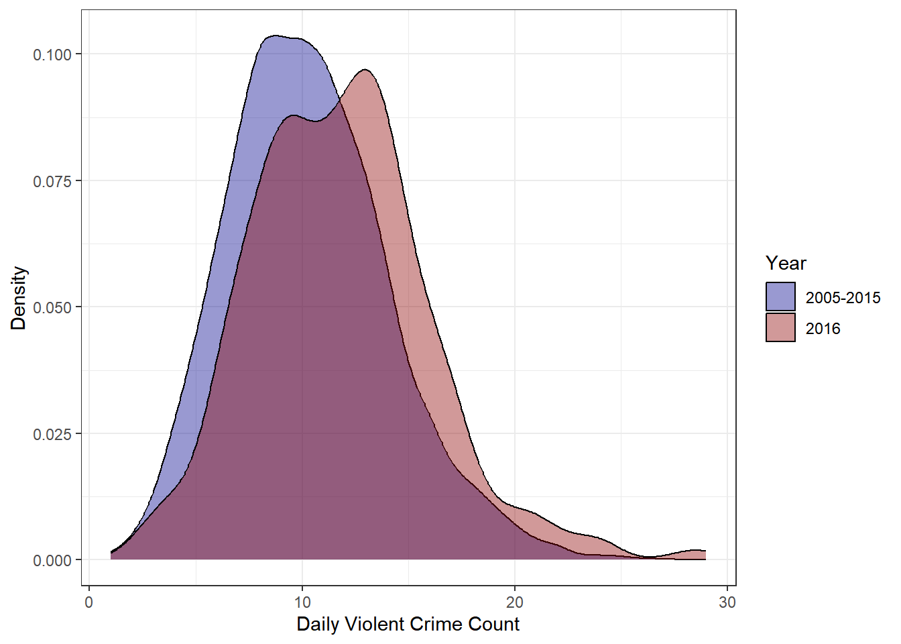
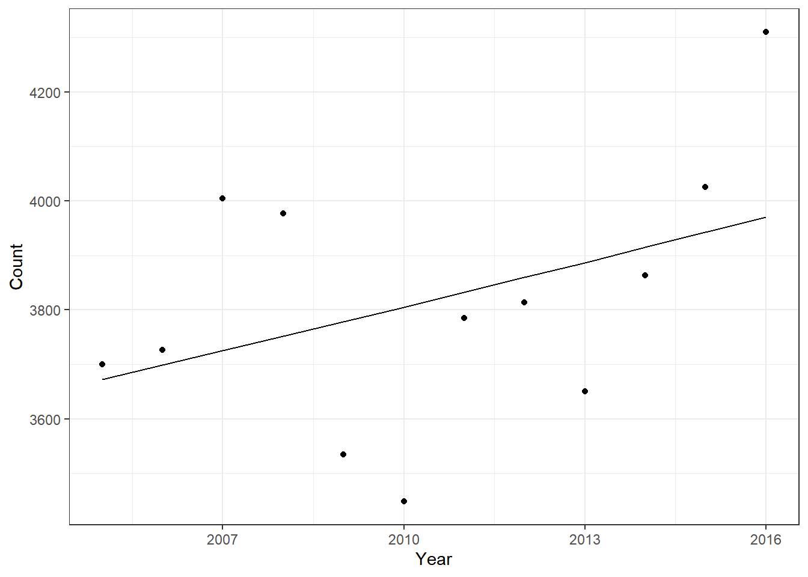
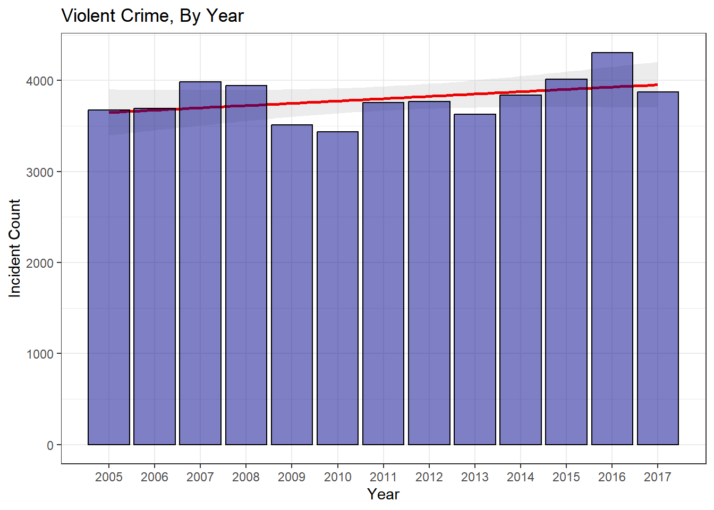

One Sample t-test
data: sums_2016$count
t = 6.7818, df = 363, p-value = 4.83e-11
alternative hypothesis: true mean is not equal to 10.30027
95 percent confidence interval:
11.34913 12.20582
sample estimates:
mean of x
11.77747 Adam
January 4, 2018
Occasionally I like to revisit my old blog posts. Since I try to treat them as a means to enhance my data science toolkit, old posts will often look quite naive when viewed several months (or years) down the road. But, these (often embarrassing) periods of reflection end up being great teaching moments. A perfect example of this occurred when I was looking back through my examination of violent crime in Louisville. While, in general, I stand by the conclusions of that report, my analysis of the daily violent crime distributions never felt like the correct method of determining significance. In that post, I was examining the 2016 daily distribution of violent crimes to see if it truly was an exceptionally bad year for violent crime. Leveraging the distributions in Figure 1, I determined that there was a statistically significant difference in the mean number of violent crimes per day in 2016 vs 2005-2015.

One Sample t-test
data: sums_2016$count
t = 6.7818, df = 363, p-value = 4.83e-11
alternative hypothesis: true mean is not equal to 10.30027
95 percent confidence interval:
11.34913 12.20582
sample estimates:
mean of x
11.77747 Several things about that analysis always seemed off though. In effect, that analysis was asking if the daily values I saw in 2016 were consistent with a world where the true violent crime rate was given by the mean daily average from 2005-2015 – in this case 10.3 crimes per day. In my analysis, the answer to this question was no, the 2016 values seemed to come from a different distribution.
However, in statistics, there are a thousand tests to run and choosing the right one is a non-trivial process. Using the wrong test can, and often does, lead to incorrect conclusions. By using a t-test, I am making a decision to collapse my data significantly. I start with a detailed account of 12 years of crimes, but I end up reducing the data set down to two numbers– a mean for 2005-2015 and a mean for 2016. This sort of analysis doesn’t take advantage of my rich data set and unnecessarily gets rid of valuable information. That’s generally a bad idea when doing data analysis.
Additionally, a t-test assumes that the data follows a normal distribution and has homogeneous variance. Though the distributions do look fairly normal, I know this data is counting the occurrences of an event and that is something modeled much more appropriately by a Poisson distribution. If my data is modeled by a Poisson distribution, I can use what’s called a Poisson test to see whether the rate parameter–in this case the expected violent crime count–is the same for a pair of measurements. Using some basic information about my data allows me to choose a more appropriate statistical test.
When applying this test, I could use the daily data as I did in my initial analysis. However, the daily counts vary significantly and many days have very few crimes at all. Also, I don’t particularly care if two single days have different crime rates. So instead of daily crime counts, I want to use yearly counts to test if the crime rate for the year is different. I could just as easily look at monthly or quarterly data, but a yearly rate has a nice ring to it.
As you can see below, the Poisson test rejects the null hypothesis that the 2015 and 2016 violent crime rates are the same. This indicates we can be relatively confident that the rate of violent crime went up in 2016.
Comparison of Poisson rates
data: c(year_sums$total[1], year_sums$total[2]) time base: c(1, 1)
count1 = 4011, expected count1 = 4149, p-value = 0.002535
alternative hypothesis: true rate ratio is not equal to 1
95 percent confidence interval:
0.8959669 0.9770115
sample estimates:
rate ratio
0.9356193 But seeing as how I’m revisiting this post, that doesn’t quite satisfy my curiosity. What if 2016 was just bad luck? What if the violent crime rate didn’t actually change and we just got really unlucky and ‘drew’ poorly from Louisville’s Poisson crime distribution. Luckily, I can simulate 2016 data pretty easily and use that simulated data to get some idea of how ‘unlucky’ 2016 was. If I go with the assumption that 2016 is unchanged from 2015, I can repeatedly draw from a poisson distribution with lambda equal to 2015’s violent crime total. Doing this repeatedly can tell me how often I’d see results as high as 2016’s if the rate of violent crime hadn’t really changed.
poisson_test <- function(){
sim_val <- rpois(1, lambda = year_sums$total[1]) # draw one sample from a poisson distribution with lambda equal to 2015 total
p_val <- poisson.test(x = c(year_sums$total[1], sim_val), T = c(1,1))$p.value # Perform poisson.test with simulated 2016 value and save p.values
return(p_val)
}
results <- replicate(10000, poisson_test()) # perform this simulation 10000 times and store the p_values
# check how many times we find a significant result
sum(results<0.05)[1] 48My results show that only 48 times out of 10,000 did I see results that would allow me to reject the null hypothesis that the rates were equal. In raw numbers, this means I saw values of 4190 or higher only 48 times. The actual 2016 count of 4287 seems even more extreme now. Both the Poisson test and the Poisson Monte Carlo simulations make me a little more confident that 2016 was an abnormally high violent crime year, but I can actually use some regression modeling techniques to further explore this problem.
Linear regression is a fundamental technique in data science. Practitioners regularly use it to model the linear relationships between dependent and independent variables. Poisson regression is a generalization of the regression model that assumes the response variable follows a Poisson distribution. Using this assumption allows us to model count data like we have in our violent crime problem.
In this specific instance, I am interested in the relationship between the violent crime counts and the year. By looking at the strength of the year to count relationship, I should be able to gain some intuition for just how unusual a year 2016 was for violent crime. Regression modeling is pretty simple in R. I apply the correct filtering and then use the glm function to build a Poisson regression model.
Call:
glm(formula = count ~ year, family = poisson, data = df)
Coefficients:
Estimate Std. Error z value Pr(>|z|)
(Intercept) -6.360505 2.720892 -2.338 0.0194 *
year 0.007266 0.001353 5.369 7.91e-08 ***
---
Signif. codes: 0 '***' 0.001 '**' 0.01 '*' 0.05 '.' 0.1 ' ' 1
(Dispersion parameter for poisson family taken to be 1)
Null deviance: 160.18 on 11 degrees of freedom
Residual deviance: 131.35 on 10 degrees of freedom
AIC: 256.36
Number of Fisher Scoring iterations: 3A first glance at the results seems to show year as a significant variable, but the residual deviance indicates a problem with our model. At 13.1 our scale factor(the residual deviance divided by the degrees of freedom) is 13 times higher than the guideline threshold indicating overdispersed data. Essentially, this means that our variance is higher than expected under the theoretical Poisson model. It also means that our model isn’t very good, but with only 12 data points and one variable that’s not unexpected.
The basic problem with overdispersion when using Poisson regression is that you only have one free parameter. Your variance and mean cannot be adjusted independently due to assumptions of the model, but in practice, this assumption is often unrealistic. A common method of dealing with this is to use something called a Poisson mixture model. This allows for greater variability in the rate parameter (we now have 2 free parameters instead of 1) and should provide a better fit to the data. A negative binomial regression model is fit in the same way as the Poisson regression model.
Call:
MASS::glm.nb(formula = count ~ year, data = df, init.theta = 384.1695951,
link = log)
Coefficients:
Estimate Std. Error z value Pr(>|z|)
(Intercept) -6.000226 8.999152 -0.667 0.505
year 0.007087 0.004476 1.583 0.113
(Dispersion parameter for Negative Binomial(384.1696) family taken to be 1)
Null deviance: 14.574 on 11 degrees of freedom
Residual deviance: 12.004 on 10 degrees of freedom
AIC: 167.71
Number of Fisher Scoring iterations: 1
Theta: 384
Std. Err.: 173
2 x log-likelihood: -161.714 Our rate parameter is now a much more reasonable 1.2, but this doesn’t automatically make our model good. This is still an incredibly simple model that is missing all sorts of complexity from our full data set. With that said, the revised model doesn’t show year as a significant variable. It doesn’t appear that year alone can accurately predict the yearly violent crime totals. This should not be surprising. The p-value of 0.113 does indicate to me that there is some sort of relationship, however. My guess is that it’s hidden within some other variables. Maybe year alone doesn’t predict the count very well, but perhaps something like knowing the month and year does a better job.

When you look at Fig.2, you see that the negative binomial fit line captures the trend OK, but is way off for several data points. 2007, 2010, and 2016 are all well off the predicted amounts, but that’s not terribly surprising given how simple the model is. Our simple negative binomial model with just the year variable isn’t showing year as a significant predictor because with such a small sample and only one variable we just can’t adequately fit the data.
If we add in another variable–something like months–then you see a different result.
set.seed(1)
# Create a df with violent crimes counts grouped by year and month
df2<- crime_lou%>%
filter(nibrs_code == '13a'|nibrs_code == '120'|nibrs_code == '09a'|nibrs_code == '11a')%>%
mutate(month = factor(month, ordered = FALSE))%>%
group_by(month, year)%>%
summarise(count = n())
fit.nb2 <- MASS::glm.nb(count ~ year + month, data = df2)
summary(fit.nb2)
Call:
MASS::glm.nb(formula = count ~ year + month, data = df2, init.theta = 219.2979455,
link = log)
Coefficients:
Estimate Std. Error z value Pr(>|z|)
(Intercept) -8.712413 4.265533 -2.043 0.041100 *
year 0.007184 0.002122 3.386 0.000709 ***
monthFeb -0.281920 0.037273 -7.564 3.92e-14 ***
monthMar -0.033416 0.036199 -0.923 0.355954
monthApr 0.010055 0.036034 0.279 0.780220
monthMay 0.128107 0.035618 3.597 0.000322 ***
monthJun 0.087726 0.035756 2.453 0.014148 *
monthJul 0.127497 0.035620 3.579 0.000344 ***
monthAug 0.132143 0.035605 3.711 0.000206 ***
monthSep 0.058564 0.035858 1.633 0.102421
monthOct 0.085018 0.035765 2.377 0.017447 *
monthNov -0.004266 0.036088 -0.118 0.905896
monthDec 0.017126 0.036008 0.476 0.634347
---
Signif. codes: 0 '***' 0.001 '**' 0.01 '*' 0.05 '.' 0.1 ' ' 1
(Dispersion parameter for Negative Binomial(219.2979) family taken to be 1)
Null deviance: 356.08 on 143 degrees of freedom
Residual deviance: 144.08 on 131 degrees of freedom
AIC: 1394
Number of Fisher Scoring iterations: 1
Theta: 219.3
Std. Err.: 43.7
2 x log-likelihood: -1366.02 The addition of month as a variable completely changes the significance of the year variable. Year now shows as a significant predictor with a p-value of 0.001. What this likely means is that year alone isn’t specific enough a variable to accurately predict counts. When you combine the year and month variables to get something like January + 2016 as a set of variables, that year portion ends up having much more predictive power.
So what does all this regression talk mean when thinking back to my original question–did 2016 have significantly higher violent crime than past years? If we look at the predicted crime counts as indicated by the fit line, it would seem that 2016 was significantly outside the norm. The fact the 2014 and 2015 numbers fall much closer to the fit line also indicates to me that part of the reason 2016 is faring so poorly when compared to the previous year is that the previous year was a very standard year for crime. As you can see from the plot in Fig.2, the total number of violent crimes per year varies a great deal. There is a clear, worrying, upward trend, but it is difficult to predict exactly how bad a year is going to be.
With all that said, after performing a Poisson means test, simulating 2016 data, and fitting Poisson and negative binomial regression models, I feel more at ease declaring that 2016 had unusually high violent crime. Modeling is a very subtle field. It is tricky to know exactly how to approach a problem. When you are unsure it’s easy to fall into the trap of taking the test results as law even when the test might not be appropriate! As with most things in life, a responsible data scientist should always question their assumptions and be prepared to laugh when we fail miserably.
Right as I was finishing this post, 2018 rolled around and with it another full year of crime data became available to me!

A quick plot of the data shows that violent crime was down in 2017 by about 10%. A quick Poisson test for 2016 and 2017 data indicates that the 2017 drop is significant enough to reject the null hypothesis that 2017’s lambda rate is the same as 2016’s. Essentially, we saw a significant drop in violent crime in 2017.
Comparison of Poisson rates
data: c(year_sums_updated$count[1], year_sums_updated$count[2]) time base: c(1, 1)
count1 = 4307, expected count1 = 4090, p-value = 1.68e-06
alternative hypothesis: true rate ratio is not equal to 1
95 percent confidence interval:
1.064576 1.161686
sample estimates:
rate ratio
1.112058 When we simulate 2017 data with 10,000 draws, the minimum number of crimes we see using 2016’s rate as the lambda parameter is 4074. Even after running this simulation several times, I never see any draws below 4000. This yet again indicates how unlikely it is that 2017 isn’t a significant drop from 2016.
After further analysis, it appears that 2016 really was an exceptionally bad year for violent crime. Visual inspection, Poisson means, Monte Carlo simulation, and Poisson regression all indicate that the 2016 data fell outside the expected norm for violent crime. As a positive addendum to this news, the late addition of 2017 crime data allowed me to analyze 2017’s crime data in a similar manner and determine that 2017 saw a significant drop in violent crime. Examining Fig.3, it’s easy to see that violent crime ebbs and flows in our city. The terrific highs of 2016 were replaced by a return to normalcy in 2017. Sadly, we are going to continue to see these peak years, but I’m not sure focusing on one exceptionally poor year is the proper way to address this issue. Louisville’s violent crime is trending up. Focusing on isolated years leads to reactionary politics and rash policies. Louisville’s leadership needs to dig in and focus on foundational changes that can be made to turn the troubling upward trend around.
This post ended up being considerably more illustrative than I thought it would. The challenges and nuances present in modeling even simple problems all reared their heads in this post. Statistics is a broad and deep field, and knowing what direction to head is often half the battle. In this case, the deceptively challenging question ‘Is this change a significant one?’ presented a number of sub-questions. At what aggregation level do I need to examine the data? How do I best model the violent crime distribution? Is modeling the distribution even the correct approach–maybe I should use simulations to see how likely this result was? How about using a chi-squared test to see if 2016’s rates are what we would expect? These and many more questions all popped up during this seemingly benign analysis. This sort of wrangling is exciting and challenging to deal with as a practitioner of data science, but we have to be constantly vigilant while doing our analysis. Mindlessly applying tests can easily lead to completely backward conclusions and the temptation to blindly trust these powerful methods is strong. Statistics is a powerful tool, but great care must be taken when applying it’s methods as it’s incredibly easy to mislead people with your findings–whether you intend to or not.
Until next time!